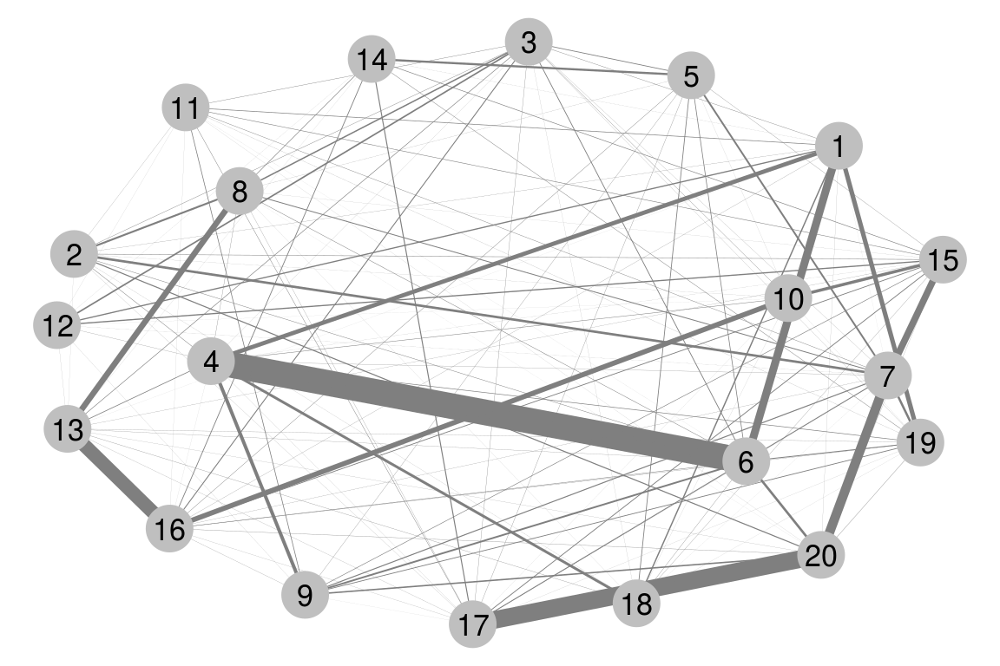
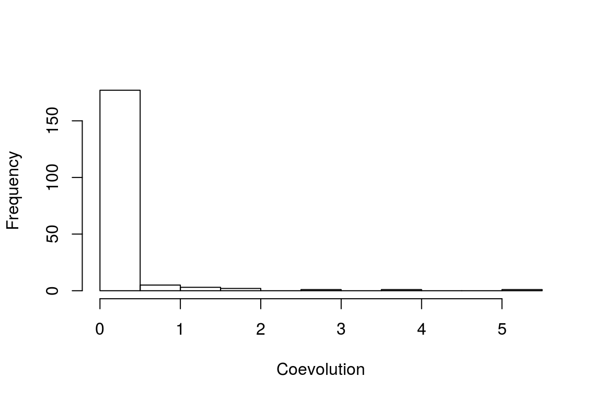
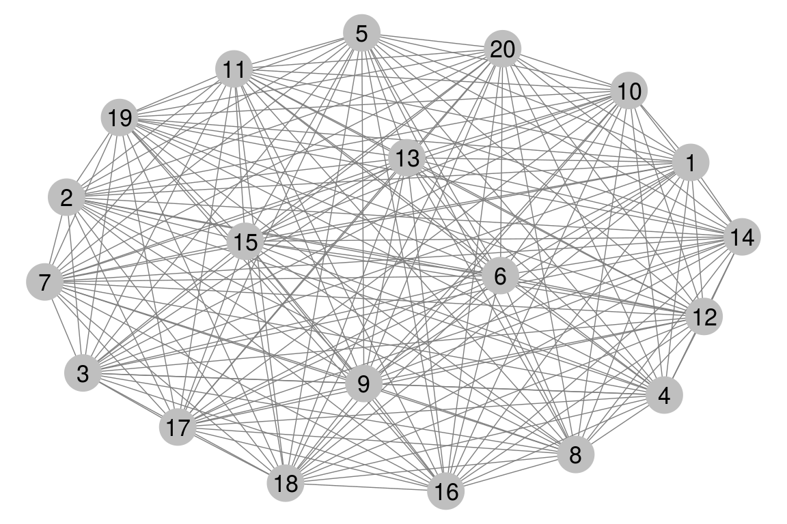
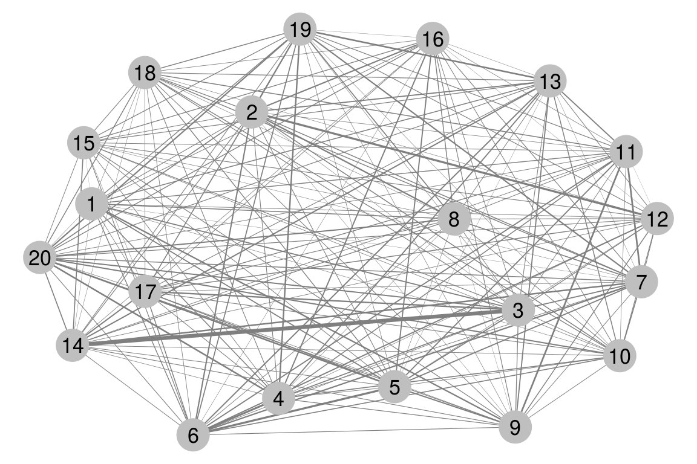
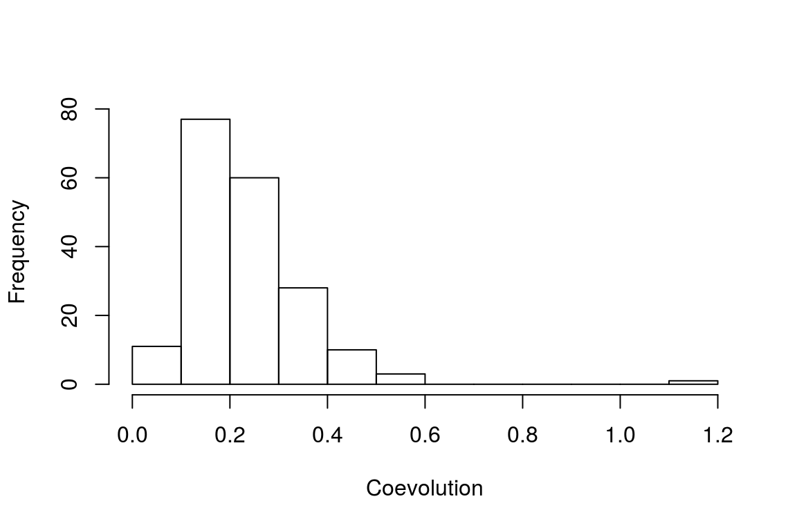
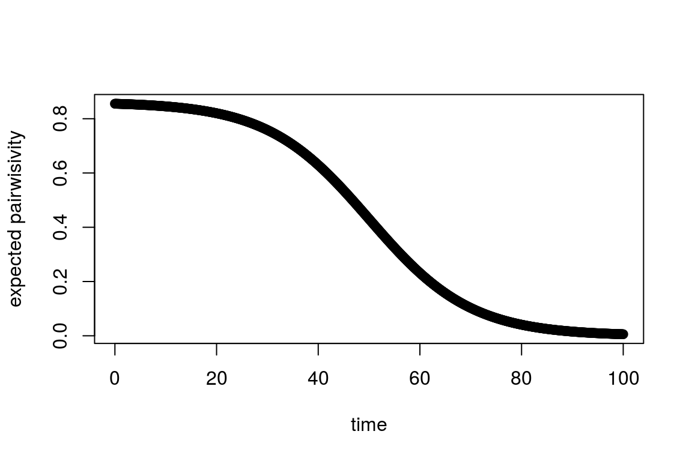
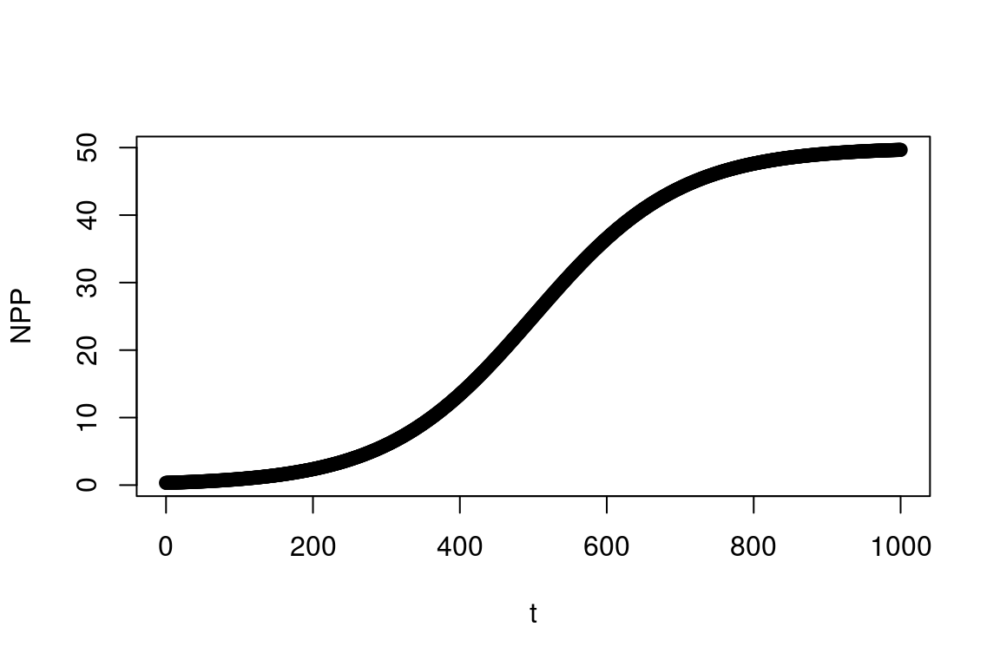
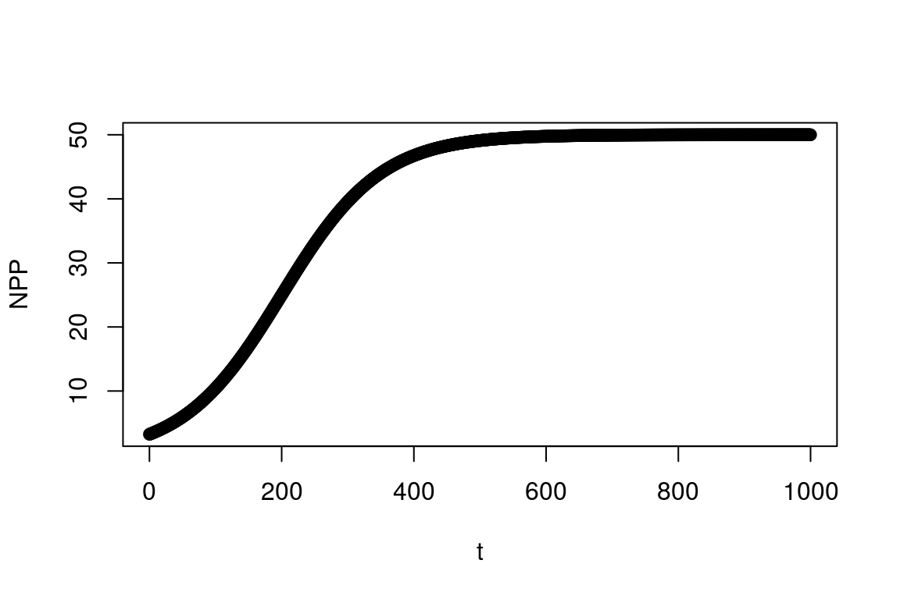

Develop novel theoretical techniques to investigate the (co)evolution of ecological communities.
Synthesizes coevolutionary theory and community ecology.
N/A
To understand the evolution of a population, we must understand how it evolves in response to its interactions with other populations and how those populations evolve in response to it. That is, we must study the coevolution of a set of many interacting populations to really understand why they have evolved to become the way they are and to speculate how they may evolve in response to changing climates.
Likewise, to understand the ecology of a population, we must also understand the ecology of the populations it interacts with and the ecology of the community altogether.
Coevolution has been defined as the reciprocal evolutionary response in a pair of populations to their interaction.
Here I provide the definitions of pairwise and diffuse coevolution I will be using and describe the method I’ve developed to measure pairwise coevolution.
With our model we get \(\mathcal{A}_i=A_i(\theta_i-\bar z_i)\) and \(\mathcal{B}_{ij}=\delta_{ij}\sqrt{B_{ij}}+B_{ij}(\bar z_j-\bar z_i)\), \(\mathcal{B}_i=\sum_j\mathcal{B}_{ij}\), and \(\beta_i=\mathcal{A}_i+\mathcal{B}_i\).
A pair of species are coevolving (with respect to the traits \(z_1\) and \(z_2\)) if \(|\mathcal{B}_{12}|,|\mathcal{B}_{21}|>0\). In light of this it seems natural to define the strength of coevolution between these species as \(C_{12}\equiv G_1G_2|\mathcal{B}_{12}\mathcal{B}_{21}|\).
Sprinkle in prev research here.
In quantitative genetics the breeder’s equation is the primary engine that drives many models of evolution. This equation can be written \(\Delta\bar z=G\beta\) where \(\Delta\bar z\) represents the change in mean trait of a population over a single generation, \(G\) is the additive genetic variance of that trait and \(\beta\) is the selection gradient that denotes the magnitude and direction of selection. We can partition the selection gradient into biotic \((\mathcal{B})\) and abiotic \((\mathcal{A})\) sources to obtain \(\beta=\mathcal{B}+\mathcal{A}\). For a collection of species I write \(\mathcal{B}_{ij}\) for the biotic selection gradient imposed on species \(i\) by species \(j\). The net biotic selection gradient for species \(i\) is \(\mathcal{B}_i=\sum_j\mathcal{B}_{ij}\). By Janzen’s definition species \(i\) and \(j\) are coevolving iff \(|\mathcal{B}_{ij}|,|\mathcal{B}_{ji}|>0\) and \(G_i,G_j>0\). Note that for a pair of coevolving species it is not necessary for \(|\beta_i|,|\beta_j|>0\) or for \(|\mathcal{B}_i|,|\mathcal{B}_j|>0\) since the net effect of many interactions, both biotic and abiotic, may cancel with each other to produce no overall change in \(\bar z_i\) or \(\bar z_j\). Of course, \(\Delta\bar z_i=0\) only if a delicate balance is held. By subsequently setting \(\mathcal{B}_{ij}\) to zero would result in \(\Delta\bar z_i=-G_i\mathcal{B}'_{ij}\) where \(\mathcal{B}'_{ij}\) is the previous biotic selection gradient. Hence, the absence of change can be the response to selection implied by coevolution.
I define the strength of coevolution between species \(i\) and \(j\) as \(C_{ij}=G_iG_j|\mathcal{B}_{ij}\mathcal{B}_{ji}|\).
I define the coevolutionary potential between species \(i\) and \(j\) as \(\varrho_{ij}=B_iB_j\).
In his talk at the “Coevolution and the ecological structure of plant-insect communities” workshop at Ohio State University in 2011, Peter Abrams discusses the expansion of the definition of coevolution to a very broad sense, including situations such as the coevolution of different morphological structures of the same species as well as the coevolution of large swaths of species within a community. Obviously my focus is on the latter, but still, this requires a broadening of the definition of coevolution layed down by Dan Janzen which has had great success in both its clarity and utility (cite nuismer 2010). Janzen’s definition referred specifically to a pair of interacting populations and for this reason I advocate referring to this as pairwise coevolution, allowing the word coevolution itself to refer to the more general notion that Abrams has presented.
I define an interaction community as a graph whose vertices represent species. I require this set of species to be connected in the graph-theoretic sense by edges which represent pairwise interactions. This means that for any two species, we can traverse the community via pairwise interactions to get from one species to any other species. If the graph is disconnected, I refer to this set of species as a composite community.
A coevolving community is a subgraph of an interaction community that is connected in the graph-theoretic sense by coevolving pairs of species.
I make the assumption that a species is represented by one trait that mediates its interactions with any other species.
It is important to distinguish between species that have coevolved and species that are currently coevolving. The classic idea of coevolution involves the observation of a pair of traits in two interacting species that appear well matched. Textbook examples include the proboscis length of Darwins moth and the corolla length of Darwins orchid as well as the levels of TTX in the flesh of newts of the genus Taricha and the resistance to TTX in the predatory snakes Thamnophsis sertalis. These are traits that have supposedly evolved over periods of time through the corresponding interaction. What makes these cases especially distinct as putative examples of coevolution is the fact that both traits in each pair are abnormal and thus seem to have simultaneously evolved in response to the interaction. This reciprocal response to selection induced by their interaction is the definition of coevolution provided by Daniel Janzen (citation).
However, by this definition alone, these classic cases of potentially coevolved traits provide only a small subset of all the coevolution that has occurred and is occurring in nature. By this definition, species are not required to interact for long periods of time to coevolve. Instead they just need to exert reciprocal selection on one another and also respond to that selection. For any pair of interacting species there is certainly some amount of selection being imparted by one onto the other, though the magnitude of this selection may be so trivial it would escape any method of detection ever concieved. Hence, so long as there is sufficient genetic variation underlying the trait in both parties, any currently interacting pairs of species are coevolving by default. If their coevolution is having noticable impacts on the evolutionary trajectories of these species, the situation returns to the colloquial notion of coevolution.
The point is not that the currently accepted definition of coevolution needs to be modified, but that it implies a much broader set of situations than typically thought of. This observation leads neatly to notions of coevolution in the broader community context where a set of many interacting species are considered at once. Indeed, in light of this discussion the notion of an interaction community collapses to that of a coevolving community. The distinction is more psychological than biological. One notion is focused on who is interacting with whom while the other is primarily concerned with the strength by which their traits coevolve.
Returning to the point being made above, since for any pair of interacing species \((i,j)\) the selection gradients \(\mathcal{B}_{ij}\) and \(\mathcal{B}_{ji}\) are continuous in value it seems natural to assume that the probability of either of them equalling to zero is zero. Another way to think about this is that the interaction induces some, maybe very small, but some selection on the interacting populations. Using the same argument for the magnitudes of \(G_i\) and \(G_j\), then we will almost always find at least some \(\epsilon\)-amount of coevolution for any given pair of interacting species (in symbols, \(P(C_{ij}>0)=1\)). This is fine; it should be understood that coevolution is continuous in value, not binary. Also, the triviality of this notion of coevolution does not remove its relevance, but emphasizes the need to study it in more detail so we can develop a more nuanced understanding of the many facets of coevolution.
Using \(C_{ij}\) we can construct other measurements that provide insight into specific coevolutionary structures of communities. For example suppose species \(i\) interacts with the set \(I_i\) of species and \(j\) interacts with \(I_j\). Set \(\gamma_i={\mathrm{argmax}}_{l\in I_i}\{C_{il}\}\). If \(\gamma_i=j\) and \(\gamma_j=i\) then coevolution is strongest between species \(i\) and \(j\) than between \(i\) and any of its partners other than \(j\) and likewise for \(j\). As this particular strength of coevolution increases above the rest, what we think of as a pairwise coevolutionary situation emerges. However, I will go a step further and define pairwise coevolution as the situation in which \(\gamma_i=j\) and \(\gamma_j=i\). Whether or not pairwise coevolution is significant, that is, whether it can be detected with some method is independent of whether or not it exists. So we can have species that are technically undergoing pairwise coevolution but the intensity of pairwise coevolution may be negligible. Setting \(\lambda_i={\mathrm{argmax}}_{l\in I_i\setminus\{\gamma_i\}}\{C_{il}\}\), one potential measure of pairwise coevolution is \(C^2_{ij}-C_{i\lambda_i}C_{j\lambda_j}\). But this would only make sense when \(\gamma_i=j\) and \(\gamma_j=i\). Instead we need a notion that describes the degree to which a species is uniquely coevolving with another species. I call this coevolutionary affinity and for species \(i\) it can be captured by \(\alpha_i\equiv C^2_{i\gamma_i}-C_{i\lambda_i}C_{\gamma_i\lambda_{\gamma_i}}\) (note that when \(\alpha_i=\alpha_{\gamma_i}\) this corresponds to a measure of pairwise coevolution since it implies that \(\gamma_i=j\) and \(\gamma_j=i\)). The subset of coevolving pairs \((i,j)\) for which \(\gamma_i=j\) and \(\gamma_j=i\) are an important subset of interactions for it contains precisely those pairs that are undergoing pairwise coevolution. For theses cases I’ll write \(\alpha_{ij}\) instead of \(\alpha_i\) or \(\alpha_j\) to emphasize the pairwise relationship between species \(i\) and \(j\). Denoting \(\mathfrak{C}\) as the set of all resident species and \(\Pi\subset\mathfrak{C}\times\mathfrak{C}\) as the set of interactions undergoing pairwise coevolution (those for which \(\alpha_i=\alpha_j=\alpha_{ij}\)) we can provide a cursory definition of the pairwisivity of a community as
\[\pi=\frac{|\Pi|}{|\mathfrak{C}\times\mathfrak{C}|}\sum_{(i,j)\in\Pi}\alpha_{ij}.\]
This quantity is interesting for it allows us to investigate the distinction between diffuse coevolution and pairwise coevolution in the community context. When \(\pi=0\) we have what I call an absolutely diffuse community. However, if there’s any variability in the strength of coevolution across the community, the pair with the greatest strength of coevolution will be sure to be an element of \(\Pi\). Hence, \(\pi>0\) a.s. As \(\pi\) increases the community tends to be more populated with pairwise coevolutionary relationships. For example, the following graph represents a community with high pairwisivity.

The distribution of coevolution in this community is captured by the following histogram.

In this case we get \({\mathbb{E}}(C)=\) 0.1770424, \({\mathrm{Var}}(C)=\) 0.3024861, and \(\pi=\) 1.2801548. At the opposite end of the spectrum, the following community is completely diffuse.

For this community we have \({\mathbb{E}}(C)=\) 0.25, \({\mathrm{Var}}(C)=\) 0, and \(\pi=\) 0. Lastly is an example of a community that has a moderate level of pairwisivity but would probably still be considered diffuse.


For this community we have \({\mathbb{E}}(C)=\) 0.2330047, \({\mathrm{Var}}(C)=\) 0.0148687, and \(\pi=\) 0.0578916.
Aside from whether or not species interact, we are curious to know as to how often they interact. Given that an individual is in the midst of an interaction, we might draw the identity of the species it is interacting with from a distribution. Then it makes sense to quantify the rates of interaction by convex combinations of all members of the community. These convex combinations represent behaviour and can also evolve.
In plant-pollinators properties of flowers such as pheromones and color can evolve to attract different pollinators, in particular ones that best pollinate the flowers. The reward can also change.
If interaction frequencies for species \(i\) are captured with \(x_i=(x_{i1},\dots,x_{iN})\) with \(x_{ij}>0\) and \(\sum_jx_{ij}=1\), we can characterize generalism with entropy: \(\gamma_i=-\sum_jx_{ij}\ln x_{ij}\). We could then study the distribution of \(\gamma\) in the community.
Instead of thinking of \(x_i\) as a vector of interaction frequencies, we can think of it more as preference. Frequencies must involve abundances along with preference. If a species is common here but rare there then even if \(x_i\) were the same at both locations, the interaction frequencies would be different.
When moving to a continuous spatial situation we can consider the probability of two critters at different locations running into each other. Or is this necessary?
Here I describe ways of categorizing communities and refer to Shipley when discussing my focus on traits and functions.
Define this purely in theoretical terms. What are some signuratures that a community has reached maturity? Low invasibility (no!)? Low pairwisitivity(no?)? Does the notion of maturity for communities make sense (maybe?)? What about the demographic dynamics of the resident species, if they’re very regular then maybe the community has reached some equilibrium?
Think about some of the oldest systems on earth. Ones that have had the same members for very long periods of time, whose population dynamics have either become very smooth or extremely predictable. The first thing that pops into my mind are the redwoods described by Whittaker.
Turnover, the instantaneous expectation of flux of resident species, can be used to measure maturity. As turnover approaches zero, the community can be said to reach ultimate maturity. This implicitly involves stabilization of demographic dynamics. Invasion rate = \(\nu\), local extinction rate = \(\varepsilon\), community flux = \(\nu+\varepsilon\).
Let \(E_T\geq0\) be a random variable representing the number of extinctions within the time interval \(T=(t_1,t_2)\). Then
\[\varepsilon\equiv\lim_{t_2\downarrow t_1}\frac{{\mathbb{E}}(E_T)}{t_2-t_1}.\]
Let \(I_T\geq0\) be the number of invasions that occur within the same time interval \(T\). Then
\[\nu\equiv\lim_{t_2\downarrow t_1}\frac{{\mathbb{E}}(I_T)}{t_2-t_1}.\]
Should we define community maturity as \(\frac{1}{\nu+\varepsilon}\)?
For a single species \(i\) whose population size is \(n_t(i)\) at time \(t\), what is
\[P(n_\tau=0|\tau\in(t,t+\delta))?\]
OR
\[P(n_\tau\leq1|\tau\in(t,t+\delta))?\]
Let’s stick with integral numbers for the population sizes so that the first probability can be easily calculated. Births and deaths can occur on a Poisson clock. The population dynamics of each species, of course, needs to be divied up into the population dynamics of the different types within that species. The trait of each member of the species can be modelled as iid rv’s whose distribution evolves according to that which has been derived in notes-evolution.
For a birth event, we could draw a Poisson distributed number of offspring. But I wonder if it would be more tractable to just increase the rate of birth instead? Then rate of birth is associated with fitness. So is rate of death. These life-history traits become directly linked to everything else.
The above rv’s depend on the environment. For a plant that depends on animal pollinators, \(B_T\) depends on the number of successful interactions it has with pollinators. We can assume exponential waiting times between births and an exponential waiting time for death. We could go on to get more explicit about the life-history of the organism
Let’s start by focusing on a single individual born at time \(t=0\). Let \(\Delta\) represent the time til death. Then this individual has a fitness of \(B_\Delta=B_{(0,\Delta)}\). If this individual has a birth rate \(b\) (the waiting times between births are \(b\)) that is time-homogenous (some organisms may have a slow or infitesimal birth rate for the first part of their life that ramps up later, for example, like humans) then
\[{\mathbb{E}}(B_\Delta|\Delta)=b\Delta.\]
If \({\mathbb{E}}(\Delta)=\tau_d\) then the expected fitness of the organism is
\[W={\mathbb{E}}(B_\Delta)=b\tau_d.\]
I don’t think we need to worry about independence since \(\Delta\) is a parameter that determines \(B_\Delta\). We could make \(b(z)\) and \(\tau_d(z)\) Gaussian functions of \(z\), then \(W\) would also be a Gaussian function of \(z\). This would probably make for the easiest first pass.
\[P(B_t=X)=\text{refer to poisson processes}\]
Let’s now focus on a single species all with the same trait. Let \(n_0\) denote the number of individuals of that species. Then
\[ P(n_t=X)=P(X-n_t\text{ births occur, if }X>n_t)\text{ or }P(X-n_t+k\text{ births occur and }k\text{ deaths occur})\dots \]
What about the portion of the population that doesn’t get to reproduce?
Before we go “full boar”, let’s just do things the typical way so as not to freak out everyone else. I’ll just follow \(\bar z_t(i)\) and \(N_t(i)\) via \(\overline W_t(i)\) or \(\overline{\ln W}_t(i)\).
For each of the following aims I will work towards developing analytical results. However, simulation work will provide insights into situations where analytical approaches become intractable.
This aim can be said to have already been fulfilled. However, there is much more work that can be done to extend the current method of inference to less stringent assumptions such as that of normality. Furthermore, the approach is currently developed with a focus on pairwise interactions. Yet most interactions involve more than two species. Hence, there is a need to extend this methodology to the community setting.
Likelihood
Species don’t need to interact for long periods of time to coevolve, they just need to exert significant reciprocal selection on one another (and respond to that selection). I hypothesize that in young and freshly disturbed communities there will be greater variation in the strengths of selection being imposed through biotic interactions and therefore a higher pairwisivity than through similar interactions taking place in older communties, where the frenzy of niche packing has settled down.
I will start with the well developed theory for pairwise coevolution to derive the dynamics of the pairwisivity of the community. Since in this theory selection gradients are determined by trait differences, tracking the distribution of traits in the community will be a major component of this approach. The other major component will be based on the degree distribution. If the degree of each species (the number of other species it interacts with) tends to be low, then there is potential for high pairwisivity. Since calculating \(\pi\) will not likely be analytically tractable, we will instead take a statistical approach by considering the potential values \(\pi\) can take given a set of traits for the community and a topology of the interactions.
The for a community that has been freshly disturbed and time \(t=0\), we might expect to see the expected pairwisivity (\(\bar \pi\)) take the following trajectory.

This aim is closely related to the above aim but has several distinct qualities. Firstly, in the above aim it is thought that pattern will hold across community types. Here we explicitly focus on different types of communities defined by the kinds of interactions present. Secondly, specialization and pairwise coevolution may appear to be similar concepts, but they are in fact quite distinct. For example, members of a community can be highly specialized but pairwise coevolution absent if there is no variance in
I hypothesize that communities will reach their climax quicker with coevolution present
Three basic phases of succession have been described by ecologists: primary and secondary successions followed by the achievement of what has been called the climax community. The idea here is that this climax community will be reached quicker if coevolution acts to mold the traits of the commnunity members.
Extend this idea to the more general setting of community assembly instead of succession, which Scott is defining as a repeatable pattern of community assembly.
Also, hypothesis 3 can potentially be absorbed by this section.
I plan to extract some number measuring how far along the community has evolved towards its climax community. One potential value related to this transition is NPP, though some notion of entropy may be involved as well. Studying the asymptotic nature of this value, I can compare the rates at which this value converges or increases when coevolution is present versus when coevolution is not present.
Without coevolution:

With coevolution:

Biomass tends to increase over time as communities age. We can use mean fitness of the community to track this quantity.
I hypothesize that invasions are more successful in the presence of coevolution for mutualistic communities but less successful in the presence of coevolution for competitive communities
There are two potential outcomes I focus on: 1) coevolved communities will have an increased resistance to invaders and 2) coevolved communities will be more likely to accomodate the invader through more coevolution. The reason why I choose the latter for mutualistic communities is that a new member of the community acts as a new resource to other members of the community, attracting interactions that by definition benefit it. With coevolution present, the benifits of these interactions may become amplified, increasing the probability of invasion. In contrast, I chose the former for competitive communities for it is a complementary scenario where the invader’s fitness is decreased by interactions with members of the community. Since the community members have “home-field advantage” it seems likely that coevolution will act to snuff out invasions by amplifying fitness costs.
Begin with a climax community and bombard it with immigrants and see how many take. Find a way to measure this and figure out how this measurement changes between the situations with and without coevolution.
As species compete for resources, this competition can drive the evolution of specialization.
Use the inputs/outputs formalism to derive metrics of specialization/generalization and a distribution of these quantities across the community.
Find a distribution of complexity.
This
The proposed work will develop a set of theoretical approaches for understanding the evolution and potential coevolution of ecological communities. The goal is to synthesize ideas and theory in order to produce novel insights and a deepend understanding of the processes that shape the patterns we see in nature. This work can potentially be extended to include more idiosyncratic details that ties theory to data upon which methods of inference can be developed to assertain an explicit understanding of the empirical world.
I have none to declare.